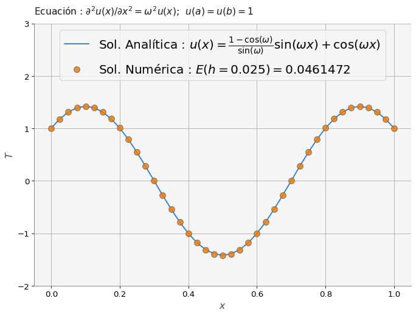

import numpy as np
import matplotlib.pyplot as plt
import macti.visual as mvis
from macti.evaluation import *6 Conducción de calor estacionaria en 1D.
Objetivo.
Resolver el siguiente problema usando diferencias finitas:
\[ -\left(k \frac{d^2 T(x)}{d x^2} + \omega ^2 T(x)\right) & = & 0 \,\,\,\,\, x \in [0,1] \tag{1} \] \[ T(0) = T_A \] T(1) = T_B $$
donde \(T_A = T_B = k = 1\) y cuya solución analítica es:
\[T(x) = \frac{1-\cos(\omega)}{\sin(\omega)} \sin(\omega x) + \cos(\omega x)\]
donde \(\omega\) = constante.
MACTI-Analisis_Numerico_01 by Luis M. de la Cruz is licensed under Attribution-ShareAlike 4.0 International


Trabajo realizado con el apoyo del Programa UNAM-DGAPA-PAPIME PE101019, PE101922
quizz = Quizz('q01', 'notebooks', 'local')6.1 Ejercicio 1.
Definir los parámetros del problema:
- Parámetros físicos: $L, T_A, T_B, k, S, = 2.5 * pi $
- Parámetros numéricos: \(N = 39, h\)
- Coordenadas de la malla: \(x\)
# Parámetros físicos: L, TA, TB, k, S, w = 2.5 * pi
L = ...
...
# Parámetros numéricos: N, h
N = ...
...
# Coordenadas de la malla
x = ...### BEGIN SOLUTION
# Parámetros físicos: L, TA, TB, k, S, w = 2.5 * pi
L = 1.0
TA = 1.0
TB = 1.0
k = 1.0
S = 0.0
w = 2.5 * np.pi
# Parámetros numéricos: N, h
N = 39
h = L / (N+1)
# Coordenadas de la malla
x = np.linspace(0, L, N+2)
file_answer = FileAnswer()
file_answer.write('1', h, 'Checa el cómo debe calcularse h.')
file_answer.write('2', x, 'Debes usar x = np.linspace(...) y poner los argumentos correspondientes.')
### END SOLUTION
# Parámetros físicos: L, TA, TB, k, S, w = 2.5 * pi
# Parámetros numéricos: N, h
# Coordenadas de la mallaCreando el directorio :/home/jovyan/macti/notebooks/.ans/Diferencias_finitas_01/
Respuestas y retroalimentación almacenadas.quizz.eval_numeric('1', h)----------------------------------------
1 | Tu resultado es correcto.
----------------------------------------quizz.eval_numeric('2', x)----------------------------------------
2 | Tu resultado es correcto.
----------------------------------------6.2 Ejercicio 2.
Definir lo siguiente:
- Arreglo para almacenar la solución:
T - Valores de la temperatura conocidos en las fronteras:
T[0]yT[-1] - Lado derecho del sistema:
b - Aplicacion de las condiciones de frontera tipo Dirichlet:
b[0]yb[-1] - Matriz del sistema lineal. Para ello usa la función
buildMatrix(...)con los parámetros correctos. - Solución del sistema lineal usando la función
np.linalg.solve(...).
# Arreglo para almacenar la solución
T = ...
# Valores de la temperatura conocidos en las fronteras:
T[0] = ...
T[-1] = ...
# Lado derecho del sistema
b = ...
# Aplicacion de las condiciones de frontera tipo Dirichlet
b[0] = ...
b[-1] = ...
# Matriz del sistema lineal
w = ...
A = ...
# Solución del sistema lineal
T[1:-1] = ...def buildMatrix(N, d):
'''
Parameters:
N: int Tamaño de la matriz.
d: float Contenido de la diagonal.
'''
# Matriz de ceros
A = np.zeros((N,N))
# Primer renglón
A[0,0] = d
A[0,1] = -1
# Renglones interiores
for i in range(1,N-1):
A[i,i] = d
A[i,i+1] = -1
A[i,i-1] = -1
# Último renglón
A[N-1,N-2] = -1
A[N-1,N-1] = d
return A### BEGIN SOLUTION
# Arreglo para almacenar la solución
T = np.zeros(N+2)
# Los valores en los extremos son conocidos debido a las cond. Dirichlet
T[ 0] = TA
T[-1] = TB
# Lado derecho del sistema
b = np.zeros(N)
# Aplicacion de las condiciones de frontera Dirichlet
b[ 0] += TA
b[-1] += TB
file_answer.write('3', b, 'Checa el tamaño correcto de b y los valores en los extremos.')
# Construcción de la matriz
w = 2.5 * np.pi
A = buildMatrix(N, 2-(w * h)**2) # Matriz del sistema
file_answer.write('4', A.diagonal(), 'Debes usar A = buildMatrix(...) y poner los argumentos correspondientes.')
# Solución del sistema lineal
T[1:-1] = np.linalg.solve(A,b)
file_answer.write('5', T, 'Checa el tamaño correcto de T y los valores en los extremos. Debes usar T[1:-1] = np.linalg.solve(...) y poner los argumentos correspondientes. ')
### END SOLUTION
# Arreglo para almacenar la solución
# Los valores en los extremos son conocidos debido a las cond. Dirichlet
# Lado derecho del sistema
# Aplicacion de las condiciones de frontera Dirichlet
# Construcción de la matrizEl directorio :/home/jovyan/macti/notebooks/.ans/Diferencias_finitas_01/ ya existe
Respuestas y retroalimentación almacenadas.quizz.eval_numeric('3', b)----------------------------------------
3 | Tu resultado es correcto.
----------------------------------------quizz.eval_numeric('4',A.diagonal())----------------------------------------
4 | Tu resultado es correcto.
----------------------------------------quizz.eval_numeric('5', T,)----------------------------------------
5 | Tu resultado es correcto.
----------------------------------------6.3 Ejercicio 3.
- Agregar una función para calcular la solución exacta.
def solExact(x, w):
...- Calcular el error entre solución exacta y numérica.
### BEGIN SOLUTION
# Agrega la función: def solExact(x, w):
def solExact(x,w):
return ((1.0 - 1.0 * np.cos(w))/np.sin(w)) * np.sin(w * x) + np.cos(w * x)
# Cálculo del error:
Error = np.linalg.norm(solExact(x,w) - T, 2)
file_answer.write('6', Error, 'Checa la implementación de la solución exacta y el cálculo del error.')
### END SOLUTION
# Agrega la función: def solExact(x, w):
# Cálculo del error:
print(Error)El directorio :/home/jovyan/macti/notebooks/.ans/Diferencias_finitas_01/ ya existe
Respuestas y retroalimentación almacenadas.
0.04614723768419929quizz.eval_numeric('6', Error)----------------------------------------
6 | Tu resultado es correcto.
----------------------------------------#
# El código siguiente realiza las gráficas usando lo calculado en las celdas anteriores
#
titulo = 'Ecuación : $\partial^2 u(x)/\partial x^2 = \omega^2 u(x); \,\,\, u(a) = u(b) = 1$'
numerica = 'Sol. Numérica : $E(h = %g) = %g$' % (h, Error)
exacta = 'Sol. Analítica : $u(x) = \\frac{1 - \cos(\omega)}{\sin(\omega)} \sin(\omega x) + \cos(\omega x)$'
plt.figure(figsize=(10,7))
xsol = np.linspace(0,1,100)
plt.plot(xsol, solExact(xsol,w),'-', label=exacta)
plt.scatter(x, T, fc = 'C1', ec='dimgray', s=75, alpha=0.85, zorder= 10, label=numerica)
plt.title(titulo)
plt.xlabel('$x$')
plt.ylabel('$T$')
plt.ylim(-2.0,3.0)
plt.legend(loc='upper center', fontsize=18)
plt.grid()
plt.show()